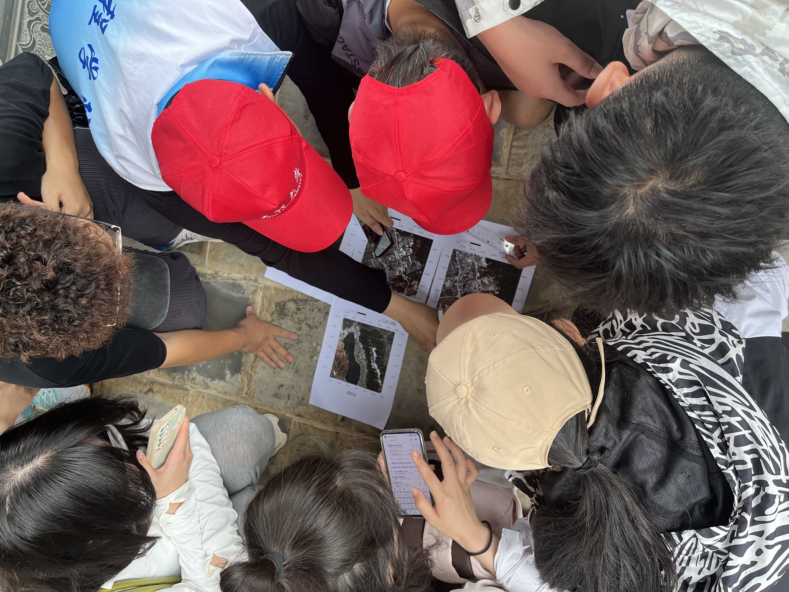
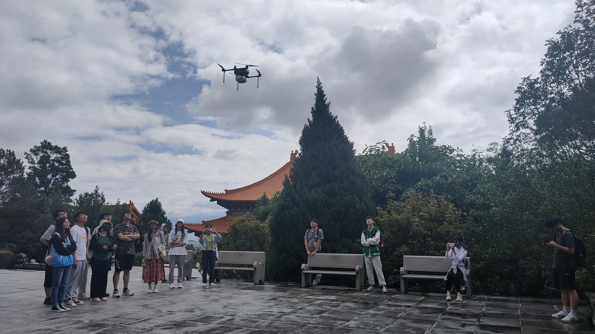
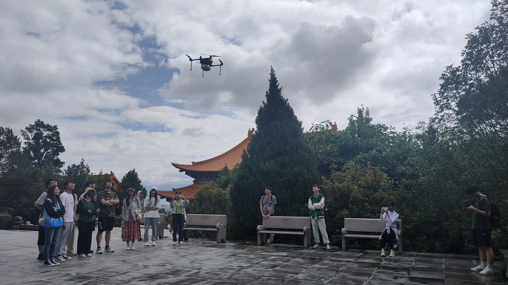
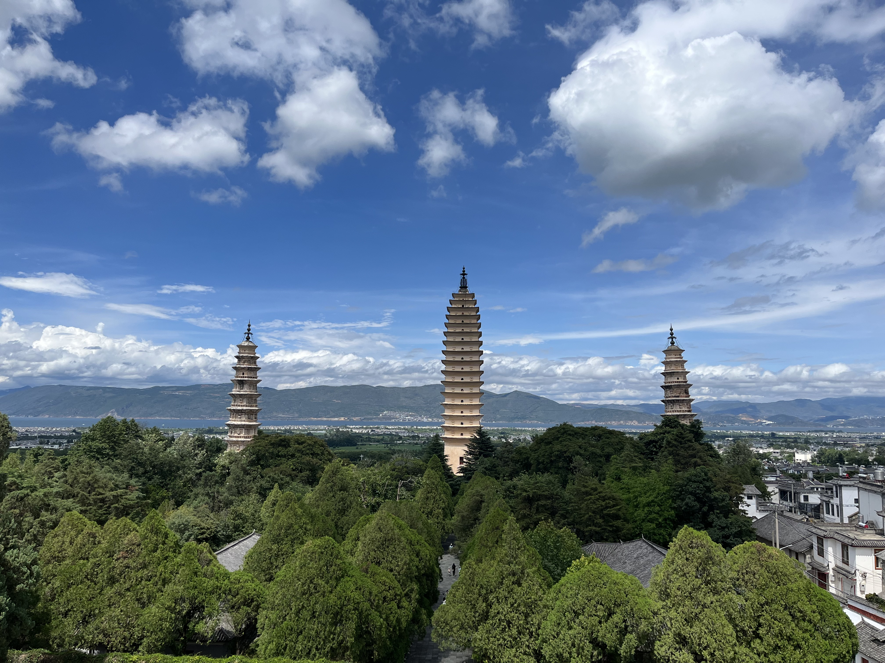
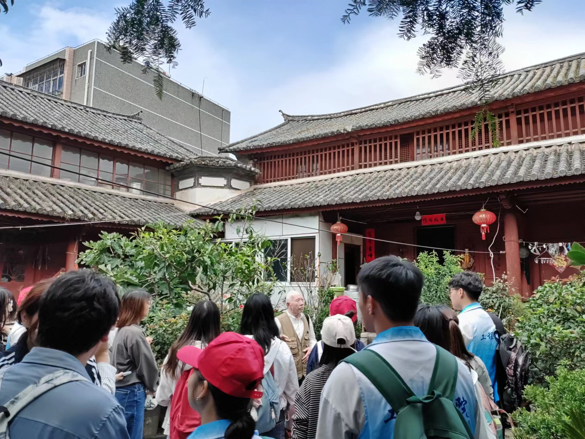
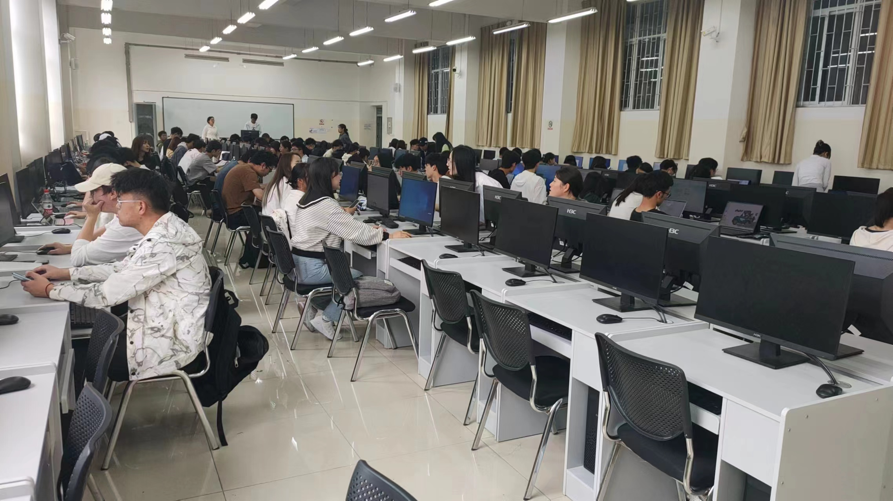
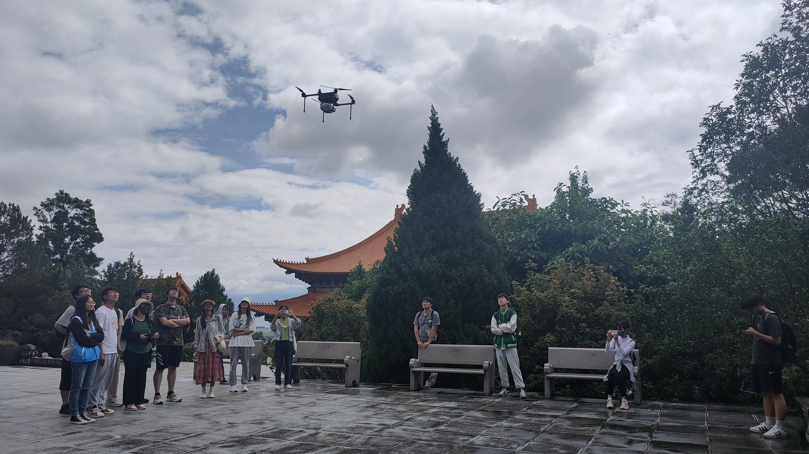

2023.7.8-2023.7.13: Field practice teaching on 3S (GPS/RS/GIS)
 
   
Hi, I am Xin Luo. I received my Ph.D. degree from Tongji University in 2019, and now I am an associate professor in the School of Earth Sciences at Yunnan University. My research interests include remote sensing techniques (e.g., multispectral/hyperspectral image processing and SAR/Lidar altimetry data processing), the machine learning/deep learning techniques, and the related applications in hydrology and cryosphere.
Email: xinluo_xin@ynu.edu.cnXin Luo (罗新)
Yunnan University
2023.7.8 -> Field practice teaching for undergraduated students (Fieldwork).
2023.3.28 -> A paper was accepted by the IJDE journal (Publication).
2022.7.22 -> Geographical field practice teaching for undergraduated students (Fieldwork).
